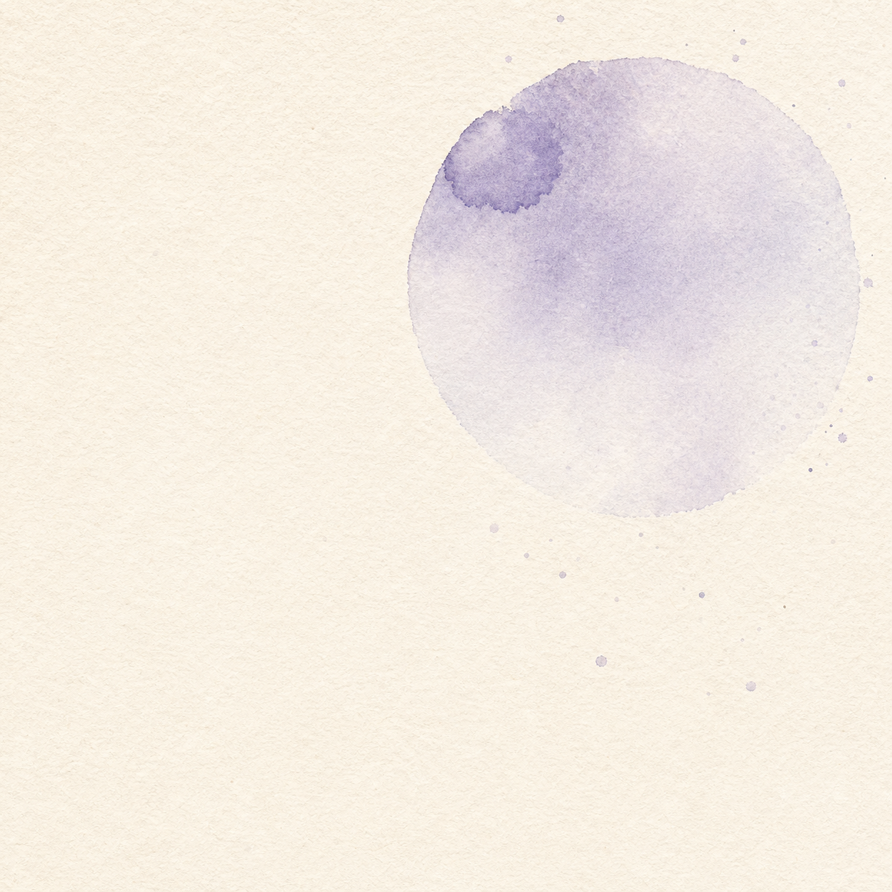

Single warm-paper theme (no light/dark — locked decision). Every value mirrors src/styles/theme.css plus the facelift additions. Companion to DESIGN.md; recipes sourced from the approved option strips.
Context for AI.
Purpose for humans.
Execution is getting cheap. Direction is becoming sacred.
--font-family-display italic · --size-pullA system for giving AI agents durable working memory, provenance, and context that can be inspected, updated, and trusted.
--font-family-body (Source Serif 4) · --size-dekContext shapes decisions, creates leverage, and compounds over time. The next durable AI products will treat context as infrastructure, not prompt decoration.
--font-family-body · --size-body · --measure 38remMay 19, 2025 · 7 min · Systems
--font-family-label (Source Sans 3) caps · metadata candidate A (tweaker)MAY 19, 2025 / 7 MIN / SYSTEMS
--font-family-mono (IBM Plex Mono) · metadata candidate B (tweaker)— A.T., the core bet
--font-family-hand (Caveat) · marginalia onlyhover: translate(-2px,-2px), oxide offset frame trails to 9px · z-index:1 required on the button
A · classic accents
B · translucent ink
C · whisper accents
--fold-clip: polygon(0 70%, 13% 70%, 31% 18%, 45% 70%, 65% 34%, 80% 70%, 100% 70%, 100% 100%, 0 100%) · angular, never wavy, no blur · thickness/color knobs to come
the premise / 01
Execution is getting cheap. Direction is becoming sacred.
real wash soft-light @ .35 under feTurbulence grain @ .12 · hand-brushed SVG boundaries top/bottom
Primary company / Context-aware AI infrastructure
A system for giving AI agents durable working memory, provenance, and context that can be inspected, updated, and trusted.
Bring a design-partner workflow →
Context shapes decisions, creates leverage, and compounds over time. The next durable AI products will treat context as infrastructure, not prompt decoration.
Read the essay →thumbnail = the essay's own lead art, never a repeated placeholder
Alvis Tang
Context for AI. Purpose for humans.
Persistent enthusiast
by choice.
masked wash soft-light, 8s breathe · animation removed under prefers-reduced-motion